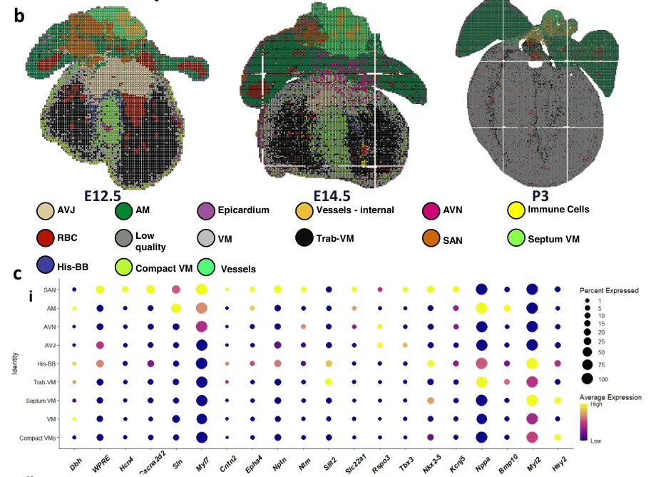

这样的marker，真的能确认细胞身份吗
原文：https://mp.weixin.qq.com/s?__biz=MzAwMzIzOTk5OQ==&mid=2247540779&idx=1&sn=f2146c87af908ff29315b6cd1cfbb664&chksm=9b3c597bac4bd06da579e214f6e07cd9b7dd1463211ba176b16327117914d85442cd62536f88#rd 合集：漫谈胡侃
看到一篇空转文章，里面的marker注释大概是这个情况，虽然说空转的细胞类型注释一直是个大难题，但是这个marker质量是不是该优化一下。

我们也做过很多其它的空转数据的marker，仅供参考，不是同一技术、组织、物种、时间来源(+ 保命)，仅供参考，请勿横评，点击图片可以跳转原文：
保命)，仅供参考，请勿横评，点击图片可以跳转原文：
参考：
Sun T, Grassam-Rowe A, Pu Z, Li Y, Ren H, An Y, Guo X, Hu W, Liu Y, Zheng Y, Liu Z, Kou K, Ou X, Chen T, Fan X, Liu Y, Tu S, He Y, Ren Y, Chen A, Shang Z, Xia Z, Miquerol L, Smart N, Zhang H, Tan X, Shou W, Lei M. Dbh+ catecholaminergic cardiomyocytes contribute to the structure and function of the cardiac conduction system in murine heart. Nat Commun. 2023 Nov 28;14(1):7801.